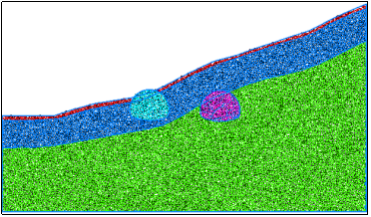
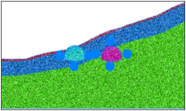
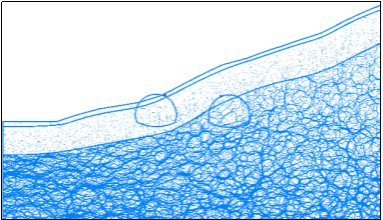
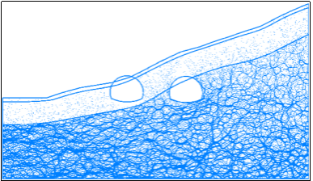
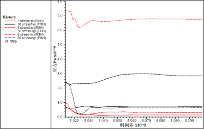
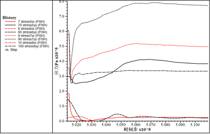
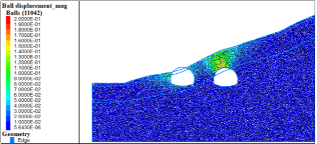

该隧道断面定位在SZK7-2地质钻孔，主要岩层为强风化千枚状砂岩、中风化千枚状砂岩，上覆粉质粘土。
(1) 模型

图1 初始模型

图2 测量点分布
根据工程地质横断面图在CAD中等比例绘制隧道断面图，根据断面图等比例生成的明月山3号隧道出口段离散元模型如图1所示，地层从上到下主要为粉质黏土、强风化千枚状砂岩、中风化千枚状砂岩。图2给出了相关量测点位置信息，测量点顺序按照顺时针标记。
(2)力链分布及调整
力链初始分布随岩层破碎程度有明显的分界面，上方力链较小，下方较大。开挖后右侧隧道上方力链可以看到明显的成冒落拱状分布。整个调整过程力链大小改变和集中程度改变不明显。

图3 初始力链分布

图4 力链调整
(3)开挖过程应力调整及位移场
隧道开挖后没有明显的裂纹产生，
表1 初始地应力
量测点 | 水平应力/MPa | 垂直应力/MPa |
1 | 0.067 | 0.063 |
2 | 未设置 | 未设置 |
3 | 0.096 | 0.24 |
4 | 0.73 | 0.24 |
5 | 0.18 | 0.30 |
6 | 0.024 | 0.14 |
7 | 0.58 | 0.36 |
8 | 1.37 | 0.60 |
从图7中可以看出由于围岩较破碎，开挖过程中会产生10cm左右的变形，没有支护情况下难以维持自稳定。

图5 左侧隧道应力调整

图6 右侧隧道应力调整

图7 位移及裂隙扩展